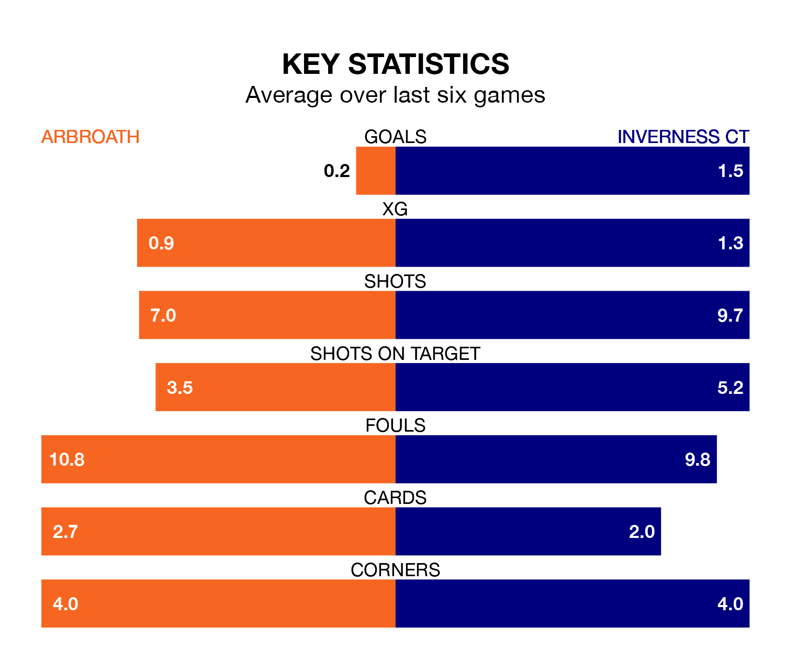

Saturday's match at Gayfield Park sees two relegation candidates play each other, as bottom of the table Arbroath host eighth-placed Inverness CT.
Arbroath have picked up 19 points from their first 19 Championship games, with five wins and four draws.
That is six points less than ICT have collected, having won six and drawn seven.
Arbroath are in terrible form in the Championship, with no wins and two draws from their last six games.
With two wins and a draw over that period, Inverness CT's form is better – they have taken seven points from 18, compared to the hosts' two.
In the last 10 years, Arbroath and Inverness CT have played each other on 20 occasions. Arbroath won five of them, Inverness CT nine, and they drew six times.
On average, Arbroath scored 0.9 goals and ICT 1.6 in those matches.
Their last meeting was on December 16, when Arbroath won 2-1 away.
With 24 goals in 23 games so far this season, Arbroath are the league's second-lowest scorers with 1.0 goals per game. And they are conceding more than average, letting in 46 goals at a rate of 2.0 per game.
ICT are also below average scorers, with 1.2 goals per game, compared to a league average of 1.4. They have conceded 1.3 goals per game.
The away side's Cameron Harper is among the league's most creative players, racking up eight assists in 24 appearances so far this season, and holding fourth spot in the Championship's assist charts.
For Arbroath, Scott Stewart has set up the most goals, having laid on three assists in 23 games.
Arbroath's last match was on February 17, a 1-1 draw against Dunfermline Athletic, with Thomas O'Brien getting the goal for Arbroath.
Inverness CT drew 3-3 with Partick Thistle last time out, also on February 17, with Cammy Kerr, Nathan Shaw and Remmi Savage on the scoresheet.
Updated: 12:18 (UTC), 19/02/24